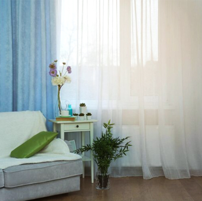

Summer in Bangladesh can be extremely hot and humid. During this season, the right curtains can make a big difference in keeping your home comfortable and cool. Summer curtains are designed to allow airflow, reflect sunlight, and reduce indoor heat while still maintaining privacy and style.
In many homes across Bangladesh, people switch their heavy winter curtains with lighter summer fabrics. Choosing the right summer curtain can help lower the need for constant fan or AC usage. At Curtivelle, we provide the right curtain you need for the scorching heat of summer.
Book for ConsultancyTypes of summer curtains in Bangladesh
Summer curtains come in many styles and materials suitable for the climate in Bangladesh. The main goal is to block harsh sunlight while allowing fresh air and natural brightness into the room. Below are some popular types of summer curtains we provide for the Bangladeshi environment:
Sheer CurtainsSheer curtains are one of the most popular summer options. They are made from lightweight fabrics such as voile or chiffon that allow light to pass through while maintaining privacy. These curtains create a soft and airy atmosphere inside the room. |
Cotton CurtainsCotton is a natural and breathable fabric, making it ideal for summer use. Cotton curtains can filter sunlight effectively while keeping the room cool and comfortable. They are also easy to wash and maintain. |
Linen CurtainsLinen curtains are slightly thicker than sheer curtains but still breathable. They offer a relaxed and elegant look and work well in living rooms or large windows where both style and comfort are important. |
Bamboo or Natural Fiber CurtainsSome homeowners prefer eco-friendly options like bamboo or jute-blend curtains. These materials block heat effectively and add a natural aesthetic to the room. |
Light Blackout CurtainsWhile blackout curtains are usually associated with winter, light blackout summer curtains are available with breathable layers. They help reduce strong sunlight during midday while still allowing airflow. |
Voile CurtainsVoile curtains are extremely soft and lightweight, making them ideal for hot climates. They allow plenty of airflow while softening sunlight. It is ultra-light fabric for maximum comfort and gives rooms a soft, elegant appearance. |
What to keep in my mind when choosing summer curtains?
Buying curtains without considering certain factors can lead to discomfort during summer. Many people focus only on appearance, but performance is equally important. Since Bangladesh has a humid tropical climate, curtain fabrics must handle sunlight, heat, and moisture effectively.
- Always choose breathable fabrics such as cotton, linen, or voile. These materials prevent heat buildup and allow airflow inside the room.
- Measure your window properly before buying. Curtains that are too short may allow sunlight to enter from the sides.
- Consider how much sunlight you want in the room. Bedrooms may require thicker curtains, while living rooms can use sheer fabrics.
- Choose fabrics that are easy to wash and maintain. In humid weather, curtains can collect dust and moisture quickly.
- Curtains should match the interior design of your home. Neutral shades work well with most furniture styles and keep the room visually cool.
- Summer curtains are available at many price levels. Decide your budget first so you can balance quality and affordability.
Some tips for Summer curtains
In Bangladesh, temperatures can rise significantly during summer afternoons. Curtains that reflect sunlight and allow ventilation can make a noticeable difference in indoor comfort. Below are some practical tips to get the best results from summer curtains:
- Light colors such as white, cream, beige, or pastel shades reflect sunlight instead of absorbing heat. This helps keep rooms cooler during the daytime.
- Cotton, linen, and voile fabrics allow air circulation. Avoid heavy velvet or thick polyester materials during summer because they trap heat.
- Combining sheer curtains with light black-out curtains allows flexibility. You can use sheer fabric during the day and close the thicker layer when sunlight becomes too strong.
- Hanging curtains slightly wider than the window helps block side sunlight and creates better shading.
- Summer dust and humidity can make curtains dirty quickly. Washing them regularly helps maintain hygiene and keeps fabrics fresh.
Choose Curtivelle for summer curtains
Curtivelle has become a trusted option for homeowners who want stylish and functional curtain solutions designed specifically for modern interiors. We also offer style-based, seasonal, and interior-based curtain solutions. Here are some reasons why Curtivelle is a wonderful option for summer curtains:
- Curtivelle provides high-quality fabrics that are suitable for warm climates.
- Curtivelle offers custom curtain solutions where fabric, color, and size are tailored to your specific space.
- Curtivelle offers consultation services that help customers pick the right fabric, color, and design based on lighting conditions, privacy needs, and interior decor.
- Curtivelle provides professional measurement and installation services.
- High-quality stitching and strong hardware ensure the curtains maintain their shape and elegance for a long time.
- Curtivelle continues to support customers even after installation, helping with maintenance advice or adjustments if necessary.
- Curtivelle recommends fabrics that work well with local heat, humidity, and dust, making their curtains practical for everyday use.
FAQ about summer curtain
What fabric is best for summer curtains?
Lightweight and breathable fabrics are the best choice for summer curtains. Materials such as cotton, linen, voile, and sheer polyester allow air circulation while filtering sunlight.
Do summer curtains help reduce heat in a room?
Yes, summer curtains can help reduce indoor heat. Light-colored and breathable curtains reflect sunlight and prevent direct heat from entering through windows.
Which colors are best for summer curtains?
Light and soft colors work best for summer curtains. Shades like white, cream, light grey, sky blue, pastel green, and beige reflect sunlight and make rooms feel cooler and more spacious.
Are sheer curtains good for summer?
Yes, sheer curtains are very popular for summer. They allow natural sunlight to enter while still providing a level of privacy.
How often should summer curtains be cleaned?
Summer curtains should generally be cleaned every one to two months, depending on dust levels.